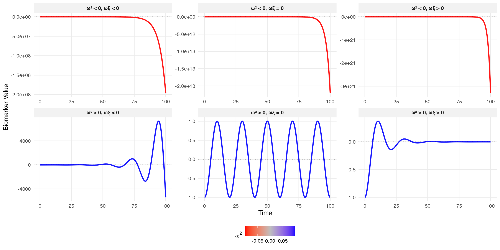
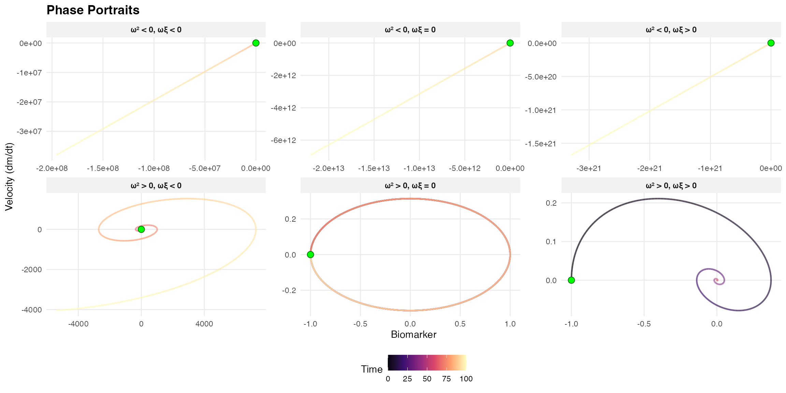
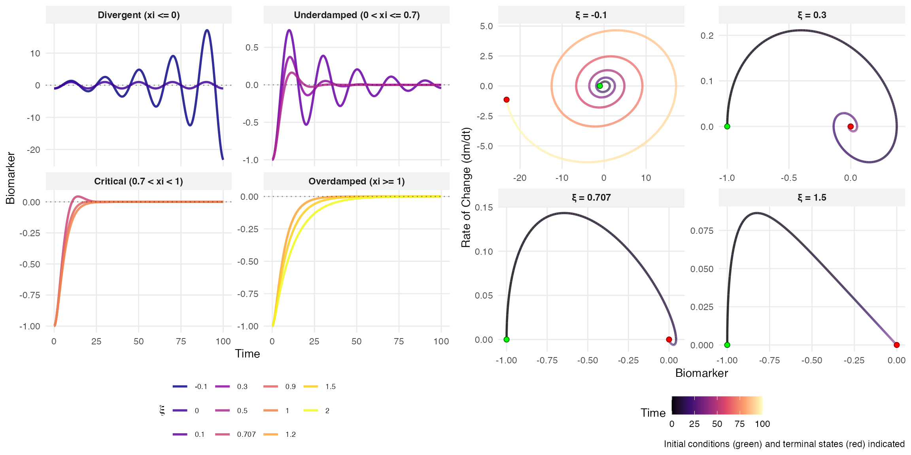
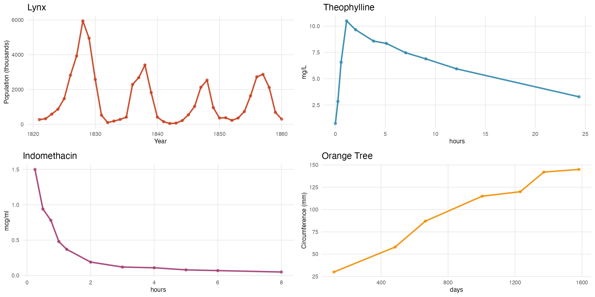

Mathematical Framework
Parameters:
- : biomarker value
- : damping ratio (stability control)
- : natural frequency
- : steady-state gain
- : external excitation
Systematic Classification
Complete 23 matrix: (motion type) (energy behavior)


Autonomous Systems
Constant excitation ():

- Stable: AND
- Marginally stable: AND
- Unstable: OR
Real Data Examples
Four biological datasets illustrate distinct damping behaviors:
- Canadian Lynx (1821-1934): Annual trapping data showing predator-prey population cycles with pronounced oscillations
- Theophylline: Pharmacokinetic data from 12 subjects showing drug concentration after oral administration of the anti-asthmatic medication
- Indomethacin: Plasma concentration following intravenous injection of the anti-inflammatory drug in 6 subjects
- Orange Tree Growth: Trunk circumference measurements over time from a forestry growth study

This analysis requires for real natural frequencies, focusing on stable or oscillatory systems that better represent biological reality. Systems with exhibit purely exponential divergence without oscillations and lack practical relevance for modeling physiological processes.
Theoretical Analysis
| Damping | Condition | Solution Form | Behavior |
|---|---|---|---|
| Underdamped | , | Decaying oscillations | |
| Critically damped | , | Fastest decay without oscillation | |
| Overdamped | , | Slow exponential decay | |
| Undamped | , | Sustained oscillations | |
| Unstable | or | Exponential growth | System diverges |
where:
- : damped natural frequency
- : overdamped eigenvalues
- : constants determined by initial conditions
Joint Model with Survival Outcomes
The hazard function incorporates both the biomarker level and its rate of change:
where:
- : baseline hazard function
- : regression coefficients for biomarker level and velocity
- : power transformation for velocity (e.g., squared to capture magnitude)
This formulation captures two distinct aspects of risk:
- : The biomarker level itself (e.g., elevated glucose indicating immediate risk)
- : The biomarker volatility (e.g., rapid fluctuations indicating instability)
By incorporating , we effectively model both the biomarker’s central tendency and its temporal variability—analogous to simultaneously capturing mean and variance effects on survival risk. This dual characterization provides richer prognostic information than static measurements alone.
Remark: For oscillatory biomarker dynamics (), using absolute values prevents positive and negative velocity contributions from canceling in cumulative hazard calculations, ensuring that all variability contributes to risk assessment.